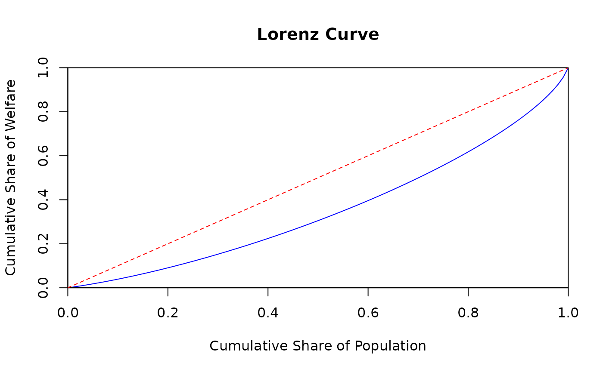

Grouped Data Functions
gd_functions.RmdOverview
This vignette shows an overview of the pipster package
functions for grouped data. Grouped data are consumption expenditure or
income organized in intervals or bins, such as deciles or percentiles.
In order to estimate poverty and inequality measures from grouped data,
one has to derive a continuous Lorenz curve and use it together with
mean welfare to build a full distribution. pipster provides
a series of functions to estimate poverty and inequality measures, based
on the methodology of Datt
(1998):
pipgd_pov_headcount()(FGT0)pipgd_pov_gap()(FGT1)pipgd_pov_severity()(FGT2)
It also provides a series of functions to calculate distributional measures and to select and validate the best Lorenz curve for subsequent estimation:
Sample Grouped Data
In this vignette, we will explore several typical scenarios in which
the pipster package can be effectively utilized. In each of these
scenario, we will use a sample dataset, pip_gd, available
with the package and obtained from Datt
(1998). The dataset shows the distribution of consumption
expenditure in rural India in 1983. The variables are the following:
- W: Weights, share of population, sum up to 100.
- X: Welfare vector with mean welfare by group.
- P: Cumulative share of population.
- L: Cumulative share of welfare.
- R: Share of welfare, sum up to 1.
#> W X P L R
#> 1 0.92 24.84 0.0092 0.00208 0.002079692
#> 2 2.47 35.80 0.0339 0.01013 0.008047104
#> 3 5.11 45.36 0.0850 0.03122 0.021093739
#> 4 7.90 55.10 0.1640 0.07083 0.039613054
#> 5 9.69 64.92 0.2609 0.12808 0.057248211
#> 6 15.24 77.08 0.4133 0.23498 0.106902117
#> 7 13.64 91.75 0.5497 0.34887 0.113888553
#> 8 16.99 110.64 0.7196 0.51994 0.171066582
#> 9 10.00 134.90 0.8196 0.64270 0.122764156
#> 10 9.78 167.76 0.9174 0.79201 0.149309315
#> 11 3.96 215.48 0.9570 0.86966 0.077653634
#> 12 1.81 261.66 0.9751 0.91277 0.043099829
#> 13 2.49 384.97 1.0000 1.00000 0.087234016Case 1: Simple Welfare Analysis and Lorenz Curve
1.1 Welfare share at a given population share
One simple use case is calculating the welfare share of a specific
share of the population, which can be achieved using
pipgd_welfare_share_at():
# Calculate the welfare share at a given population share
selected_popshare <- 0.5
welfare_share_50 <- pipgd_welfare_share_at(welfare = pip_gd$L,
weight = pip_gd$P,
popshare = selected_popshare,
complete = FALSE)
#> Warning: replacing previous import 'collapse::fdroplevels' by
#> 'data.table::fdroplevels' when loading 'wbpip'When complete = FALSE, the output is a list. The results
can be accessed like so:
1.2 Quantile share vs cumulative share
pipster has a selection of functions to calculate
welfare shares. When n is declared,
pipgd_quantile_welfare_share() will calculate the share of
welfare owned by a specific share of the population, while
pipgd_welfare_share_at() will return the cumulative
share:
quantile_welfare_share <- pipgd_quantile_welfare_share(welfare = pip_gd$L,
weight = pip_gd$P,
n = 5,
complete = FALSE)
quantile_welfare_share_at <- pipgd_welfare_share_at(welfare = pip_gd$L,
weight = pip_gd$P,
n = 5,
complete = FALSE)
# Combine into a dataframe for practicality
df_combined <- data.frame(
popshare = quantile_welfare_share$dist_stats$popshare,
quantile_share = quantile_welfare_share$dist_stats$quantile_welfare_share,
cumulative_share = quantile_welfare_share_at$dist_stats$welfare_share_at
)
# View the combined dataframe
print(df_combined)
#> popshare quantile_share cumulative_share
#> 1 0.2 0.09067747 0.09067747
#> 2 0.4 0.13345103 0.22412849
#> 3 0.6 0.17201737 0.39614586
#> 4 0.8 0.22138237 0.61752824
#> 5 1.0 0.38247176 1.000000001.3 Estimate and Plot the Lorenz Curve
pister can also be used to estimate a Lorenz curve for a
dataset of grouped data. One hypothetical workflow:
- First, generate the parameters using
pipgd_params() - Validate the parameters using
pipgd_validate_lorenz() - Generate the Lorenz curve using the validated parameters with
pipgd_lorenz_curve()
# Validate Lorenz curve.
parameters <- pipgd_params(welfare = pip_gd$L,
weight = pip_gd$P)
validated_lorenz <- pipgd_validate_lorenz(params = parameters,
complete = TRUE)
# Select the best Lorenz curve and check which method has been used.
selected_lorenz <- pipgd_select_lorenz(params = validated_lorenz)
lorenz_used_for_dist <- selected_lorenz$selected_lorenz$for_dist
lorenz_used_for_pov <- selected_lorenz$selected_lorenz$for_pov
formatted_message <- sprintf("%s used for distribution statistics and %s used for poverty metrics.",
lorenz_used_for_dist,
lorenz_used_for_pov)
print(formatted_message)
#> [1] "lq used for distribution statistics and lb used for poverty metrics."
# Plot the Lorenz Curve
lorenz_curve_data <- pipgd_lorenz_curve(params = validated_lorenz)
plot(lorenz_curve_data$lorenz_curve$points,
lorenz_curve_data$lorenz_curve$output,
type = 'l', col = 'blue',
xlab = 'Cumulative Share of Population',
ylab = 'Cumulative Share of Welfare',
main = 'Lorenz Curve',
xlim = c(0, 1), ylim = c(0, 1),
xaxs = "i", yaxs = "i")
# Add the line of equality
abline(0, 1, col = 'red', lty = 2)